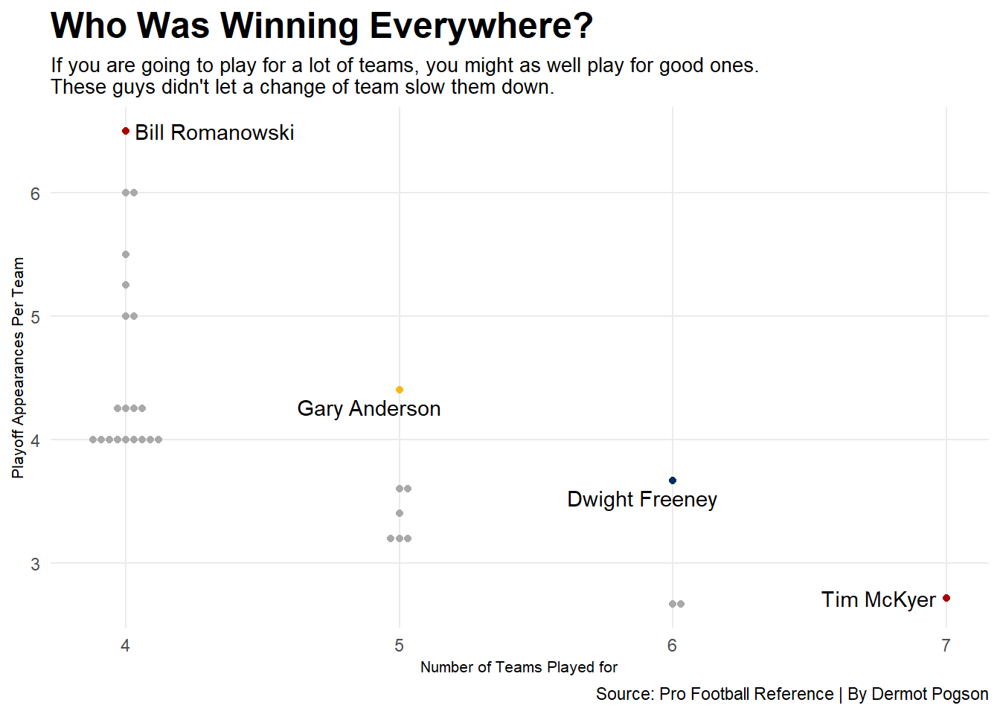

library(tidyverse)
library(ggalt)
library(ggtext)
library(ggbeeswarm)
library(ggrepel)
players <- read_csv("PlayoffLeaders.csv") |>
filter(
Tm == "4TM"|
Tm == "5TM"|
Tm == "6TM"|
Tm == "7TM") |>
summarize(
Name = Player,
PlayoffGames = PlayoffGames,
Teams = Tm,
Years = Years)
everybody<-read_csv("PlayoffLeaders.csv") |>
summarize(
Name = Player,
PlayoffGames = PlayoffGames,
Teams = Tm,
Years = Years) |>
mutate(Name=gsub("\\+.*","",Name)) |>
mutate(Teams=gsub("TM","",Teams)) |>
separate(Years, into=c("Start","End"), sep="-") |>
mutate(Teams=gsub("buf","1",Teams)) |>
mutate(Teams=gsub("cle","1",Teams)) |>
mutate(Teams=gsub("clt","1",Teams)) |>
mutate(Teams=gsub("dal","1",Teams)) |>
mutate(Teams=gsub("den","1",Teams)) |>
mutate(Teams=gsub("gnb","1",Teams)) |>
mutate(Teams=gsub("kan","1",Teams)) |>
mutate(Teams=gsub("mia","1",Teams)) |>
mutate(Teams=gsub("min","1",Teams)) |>
mutate(Teams=gsub("nwe","1",Teams)) |>
mutate(Teams=gsub("pit","1",Teams)) |>
mutate(Teams=gsub("rai","1",Teams)) |>
mutate(Teams=gsub("ram","1",Teams)) |>
mutate(Teams=gsub("rav","1",Teams)) |>
mutate(Teams=gsub("sfo","1",Teams)) |>
mutate(Teams=gsub("was","1",Teams)) |>
mutate(
Teams = as.numeric(Teams),
Start = as.numeric(Start),
End = as.numeric(End)
)
journeymen<-players |>
mutate(Name=gsub("\\+.*","",Name)) |>
mutate(Teams=gsub("TM","",Teams)) |>
separate(Years, into=c("Start","End"), sep="-") |>
mutate(
Teams = as.numeric(Teams),
Start = as.numeric(Start),
End = as.numeric(End)) |>
mutate(
CareerLength = End-Start,
PAPT = PlayoffGames/Teams,
PAPS = PlayoffGames/CareerLength,
PAWS = PAPT*(1/1.352)+PAPS*(1/4.147)) |>
group_by(Name) |>
arrange(desc(PAWS))
ra<-journeymen |> filter(Name == "Ryan Allen")
rj<-journeymen |> filter(Name == "Robert Jones")
lr<-journeymen |> filter(Name == "Logan Ryan")
gb<-journeymen |> filter(Name == "George Blanda")
br<-journeymen |> filter(Name == "Bill Romanowski")
ga<-journeymen |> filter(Name == "Gary Anderson")
df<-journeymen |> filter(Name == "Dwight Freeney")
tm<-journeymen |> filter(Name == "Tim McKyer")
journey15<-journeymen |> filter(PAWS >= 3.344401) |> group_by(Name) |> arrange(desc(PAWS))
ggplot() +
geom_point(data=journeymen, aes(x=CareerLength, y=PAPS),
color="darkgrey")+
geom_point(data=ra, aes(x=CareerLength, y=PAPS),
color="#002244")+
geom_point(data=rj, aes(x=CareerLength, y=PAPS),
color="#003594")+
geom_point(data=lr, aes(x=CareerLength, y=PAPS),
color="#002244")+
geom_point(data=gb, aes(x=CareerLength, y=PAPS),
color="#C83803")+
geom_text_repel(data=ra, aes(x=CareerLength, y=PAPS, label=Name,force=1))+geom_text_repel(data=rj, aes(x=CareerLength, y=PAPS, label=Name,force=1))+geom_text_repel(data=gb, aes(x=CareerLength, y=PAPS, label=Name,force=1))+geom_text_repel(data=lr, aes(x=CareerLength, y=PAPS, label=Name,force=1))+
labs(
x="Number of Seasons in Career",
y="Playoff Appearances Per Season",
title="Which Players Succeeded Efficienctly?",
subtitle="Some of these stars burned bright and fast. Others stayed til the bar closed. \nShine on you crazy diamonds.",
caption="Source: Pro Football Reference | By Dermot Pogson"
)+
theme_minimal()+theme(
plot.title = element_text(size = 18, face = "bold"),
axis.title = element_text(size = 8),
plot.subtitle = element_text(size=10),
panel.grid.minor = element_blank()
) People often think about the NFL from the team’s perspective. Maybe you grew up watching a team, your dad took you to your first game when you were 8, or by some other familial or cultural connection, you found yourself becoming a fan of one particular team. This is an essential part of navigating modern society; finding a group to relate to is healthy and can even make you a bigger fan of the sport. Today, however, is different. Today is all about the players.
The journeyman is a recurring role in the NFL. A player who is different from what a team wants in the long term but far too talented to stay out of the league for long. They always seem to find themselves on a roster, even if that means playing for a different team every year. These players are easy to lose track of since they might only be on any given roster for a season or two before leaving again for greener pastures. They often have some of the most unique and compelling stories of any athletes in the league. Today, these legends are being compared head to head to determine who is the NFL Journeyman of the Year based on this year’s metrics of career post-season success.
To illustrate this, it helps to have some background knowledge.
For this article, a journeyman has been defined as a player who has been on at least 4 teams during their NFL career. Of the top 260 players in NFL history who have played in the most postseason games, 31 played on 4 or more teams. Since this encompasses players across generations and positions, playoff appearances will be used to measure journeyman success. For the interest of this analysis, the emphasis is being put on players who got to the league, found post-season success as efficiently as possible, and then called it a day. That said, it is still important to consider that success for a journeyman is often just getting to play the game. While accolades and trophies are always the goal, it is the nature of these players just to enjoy the ride. These are the people we call “Football Guys”. Their loyalty is to the game itself.
Let’s start with efficiency—the players who got it done in as few years as possible.
So far, the leader is Ryan Allen, who quite happily sits separated from the pack with a PAPS (Playoff Appearances Per Season) of 2.285. As a punter who spent the height of his career with the Patriots during the Brady/Belichick era, Allen has seen his fair share of playoff appearances. He also played for the Falcons, the Colts, and the Titans, securing his spot on this list.
Following Allen is an unlikely tie between Robert Jones, a linebacker known mostly for his stint with the Cowboys, and Logan Ryan, a strong safety out of Ohio University who made his name known on those same Patriots teams as Ryan Allen. These two players had almost identical careers in the playoff appearances department. Both played for 4 teams. Both played for 9 seasons. Both played in 16 postseason games. The only significant separation is in date: Jones wrapped up his career 12 years before Ryan made his debut.
As mentioned previously, the beauty of this type of analysis is the attention is drawn to names that some may have forgotten since their tenure. The least efficient award goes to George Blanda. Once a household name and staple of professional football, Blanda Holds the record for being the oldest player to ever play in the NFL when he retired at the ripe age of 48. This man spent 26 years playing quarterback in the NFL. These were not the days of favorable calls for QBs or the modern emphasis on player safety either. From 1949 to 1975, Blanda stood in the pocket for 5 different teams and played his heart out for every minute.
While his legendary career does not earn him points in today’s efficiency ratings, his name remains eternally celebrated in Canton. Talk about a Football Guy.
The second half of our considerations for this head-to-head match up comes from each player’s value to their respective organization at any given time. For this calculation, look at the number of playoff game appearances per team played for.
ggplot() +
geom_beeswarm(data=journeymen, aes(x=Teams, y=PAPT),color="darkgrey")+
geom_beeswarm(data=br, aes(x=Teams, y=PAPT),color="#AA0000")+
geom_beeswarm(data=ga, aes(x=Teams, y=PAPT),color="#FFB612")+
geom_beeswarm(data=df, aes(x=Teams, y=PAPT),color="#002C5F")+
geom_beeswarm(data=tm, aes(x=Teams, y=PAPT),color="#AA0000")+
geom_text_repel(data=br, aes(x=Teams, y=PAPT, label=Name,force=TRUE))+ geom_text_repel(data=ga, aes(x=Teams, y=PAPT, label=Name,force=TRUE))+ geom_text_repel(data=df, aes(x=Teams, y=PAPT, label=Name,force=TRUE))+ geom_text_repel(data=tm, aes(x=Teams, y=PAPT, label=Name,force=TRUE))+
labs(
x="Number of Teams Played for",
y="Playoff Appearances Per Team",
title="Who Was Winning Everywhere?",
subtitle="If you are going to play for a lot of teams, you might as well play for good ones. \nThese guys didn't let a change of team slow them down.",
caption="Source: Pro Football Reference | By Dermot Pogson")+
theme_minimal()+
theme(
plot.title = element_text(size = 18, face = "bold"),
axis.title = element_text(size = 8),
plot.subtitle = element_text(size=10),
panel.grid.minor = element_blank()
) 
This line of analysis benefits players who were continually successful despite changing teams using PAPT (Playoff Appearances Per Team). Please also consider that when a team is winning, there is more incentive to keep the band together, and having played for fewer teams becomes an asset to a player’s average. When breaking down players into the number of teams played for, a few names float to the top.
In the 4s, the clear leader is Bill Romanowski. Romanowksi played linebacker for the 49ers, Eagles, Broncos, and Raiders. The two-time Pro Bowler stood 6’4” and weighed 245, but might be best known for his “spitting incident” in which he was fined $7500 for spitting in the face of 49ers wide receiver JJ Stokes while on the Broncos roster. Don’t let his reputation for anger mismanagement distract you, however, from remembering that he has 4 Super Bowl Rings to his name.
In the 5s, Gary Anderson stands a head above the rest. The all-time leading scorer in Steelers history was a lights-out kicker who had a solid tour around the league in his time. The proud owner of 538 career field goals and 820 career extra points should tell you that Anderson is one of the best to ever do it.
For the 6s, Dwight Freeney is the most notable. Having played for the Colts, Chargers, Cardinals, Falcons, Lions, and Seahawks, the 7 time Pro Bowler and Super Bowl XLI champion caused havoc for 15 years in the league. While his rating on this list has not benefited from being as well-traveled, he still holds one of the most exciting careers in the game’s history.
For the 7s, you’ll notice there is only one name. Tim McKyer might represent this list better than anyone. He spent 12 years in the league, had 33 interceptions, and was a member of the 1986 NFL All Rookie Team. He was also a 3x Super Bowl Champion. That is more than most people on this list or even the world can say.
By combining those two points of analysis, a final weighted score can be calculated by dividing both the PAPS and PAPT by their averages and adding them together. This puts both numbers into perspective relative to the other players on the list and, by combining those ratios, ensures that both attributes are evenly considered.
ggplot() +
geom_bar(data=journey15, aes(x=reorder(Name, PAWS), weight=PAWS),fill="lightgrey") +
geom_bar(data=br, aes(x=reorder(Name, PAWS), weight=PAWS),fill="#AA0000")+
geom_bar(data=gb, aes(x=reorder(Name, PAWS), weight=PAWS),fill="#C83803")+
geom_bar(data=ga, aes(x=reorder(Name, PAWS), weight=PAWS),fill="#FFB612")+
geom_bar(data=rj, aes(x=reorder(Name, PAWS), weight=PAWS),fill="#003594")+
geom_bar(data=lr, aes(x=reorder(Name, PAWS), weight=PAWS),fill="#002244")+
geom_bar(data=ra, aes(x=reorder(Name, PAWS), weight=PAWS),fill="#002244")+
coord_flip()+
labs(
x="",
y="Journeyman Weighted Score",
title="Bill Romanowski Wins Journeyman of the Year",
subtitle="Based on a weighted score in which PAPS and PAPT are divided by \ntheir averages and added together.",
caption="Source: Pro Football Reference | By Dermot Pogson"
)+
theme_minimal()+theme(
plot.title = element_text(size = 13, face = "bold"),
axis.title = element_text(size = 8),
plot.subtitle = element_text(size=10),
panel.grid.minor = element_blank()
) With that, Bill Romanowski lands on top of our leaderboard. It is hard to argue against; the Boston College alum played in 26 playoff games across 4 teams across 15 years. With a Playoff Appearance Weighted Score of 5.225 he lands comfortably ahead of some admirable competition.
This list is not the end-all be-all of journeymen, but rather is designed to remind the world of the stories of players that have been forgotten. While their playing days are over, their legacy lives on. Congratulations to Bill Romanowski on winning this year’s Journeyman of the Year award.